“Chess is the art of grabbing time”
The whole class runs on one idea. Coach opened with Fischer's most famous line about chess and then spent the rest of the lesson showing it three different ways — in a Fischer game, in the homework, and in an opening you will actually meet.
Speed and the initiative decide games. If you're both attacking, it's a hundred-metre sprint — the only question is who gets there first.
Before anything else, he went through everyone's Chess.com puzzle activity.
He can see it, so this one is easy to act on.
Six problems, still on the queen sacrifice / forced mate theme. Three students got all six.
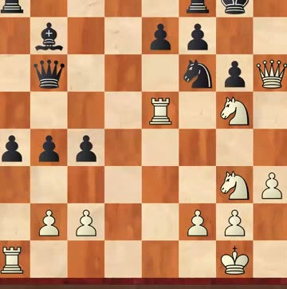
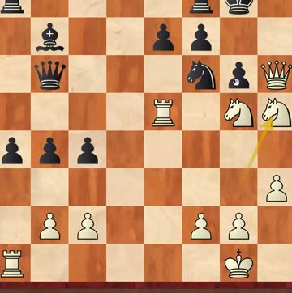
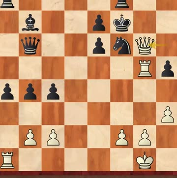
If you didn't get them all: “说明你们在计算中出现了一定的问题，及时地总结” — it means something went wrong in your calculation. Go back and work out what, straight away.
C72 Ruy Lopez, Deferred Steinitz · Bled 30th Anniversary, round 6 · 10 Sep 1961 · Fischer had White
Who Geller was. A very strong Soviet attacking player with excellent openings — and one of the few people who held his own against Fischer. Across their ten-plus games the score was roughly even. Coach made the point that this makes the win worth more, not less.
The sprint. Fischer gave up a pawn to attack the king stuck in the centre. Geller was all smiles, took it, and judged that the centre pawn mattered more than Fischer's play.
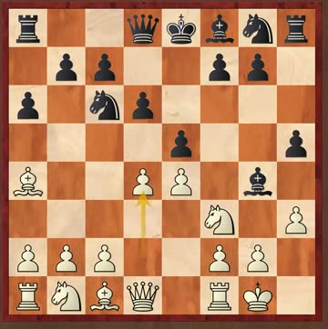
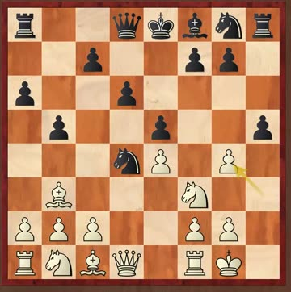
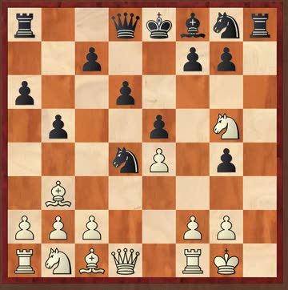
Then Geller stopped smiling. He sat and thought for thirty minutes and realised his own attack simply wasn't fast enough — and that his king had nowhere safe to go. Castling short lost material; castling long left the king too exposed.
The mistake to learn from: later on, Geller should have traded queens. The endgame would have been unpleasant but not lost. Instead he kept dreaming about mating Fischer — and lost the race.
Coach's point about work ethic, and it's a good one:
Fischer won this game — and a week after the whole tournament had finished, he sat down and went through it again. And he found something better than what he'd actually played: a queen sacrifice, 16.Qxc6+!!, mating. He wrote it up in the tournament bulletin.
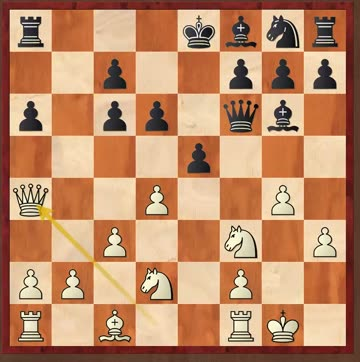
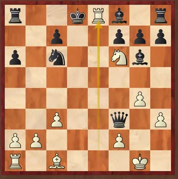
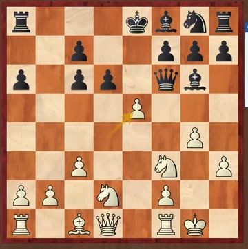
Coach also showed Tal's suggestion at move 18, what Fischer actually chose, and what Stockfish 17 prefers — so you can see a human idea, a world-champion's idea, and the engine's, side by side.
Also worth knowing: next in the world-champion series is Anatoly Karpov. Coach has met every champion after Fischer, plus Smyslov and Botvinnik — but never Fischer, Tal or Petrosian. He was in Bled himself in 2002, as coach of the Chinese Olympiad team. He says the lake is beautiful and they walked round it every evening after the games.
Before you ever get to the Spanish, the Italian or the Four Knights, you'll run into the Centre Game, the Danish Gambit and the Ponziani. Coach: you can't afford not to know these.
The Danish is White throwing pawn after pawn at you to develop fast — Fischer's "grabbing time" in gambit form. He does not recommend playing it as White (if you want a gambit, the Scotch or Evans has more in it). He taught the Black side.
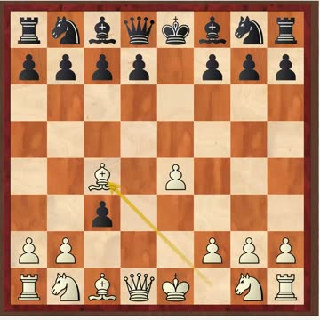
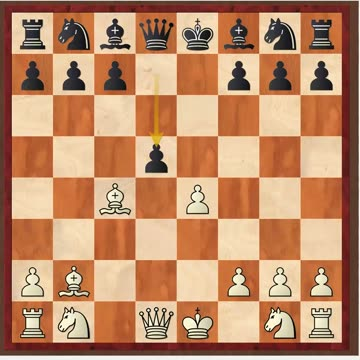
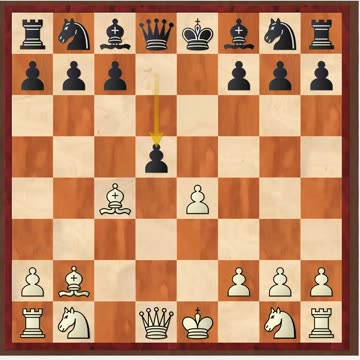
Why giving material back works: he paid pawns for attack and speed. Once the queens are traded, “他的心情坏了一半，没有进攻了” — half his mood is ruined and there's no attack left. Equal game, and you go play the endgame.
Coach learned this d5 answer forty-five years ago and says it still holds up.